취업을 준비하고 있지만, 어디서부터 시작해야 할지 모르겠다고요? 혹은 일을 그만둔 뒤, 다시 시작할 용기가 나지 않는다고요? 지금 이 순간에도 수많은 청년들이 같은 고민을 하고 있습니다.
Jump-up 도약하는 청년
서울지방고용노동청 · 서울 고용복지+ 센터
1934 청년 지원 프로젝트를 소개합니다
취업을 준비하고 있지만, 어디서부터 시작해야 할지 모르겠다고요? 혹은 일을 그만둔 뒤, 다시 시작할 용기가 나지 않는다고요? 지금 이 순간에도 수많은 청년들이 같은 고민을 하고 있습니다.
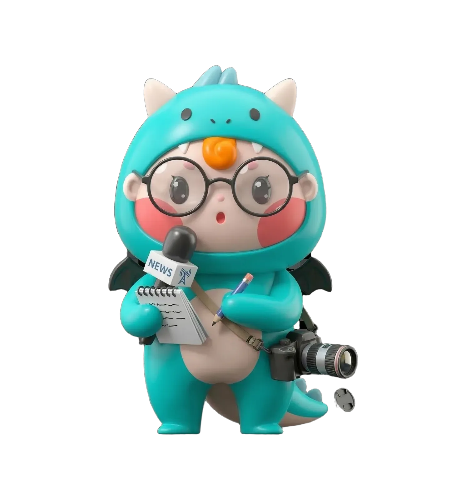
고드래곤
"안녕하세요! 저는 고용노동부의 마스코트 고드래곤이에요. 오늘은 서울고용센터에서 야심차게 새롭게 선보이는 '1934 청년 지원 프로젝트'를 소개해드리려고 해요. 저도 궁금한 게 많아서, 직접 담당자 선생님을 찾아가 물어봤답니다!
선생님, 요즘 '숨 고르기’ 중인 청년들이 많다는 이야기가 들리던데... 이게 어떤 상황이고, 그래서 1934 프로젝트가 어떻게 만들어진 건지 설명해 주실 수 있을까요?"
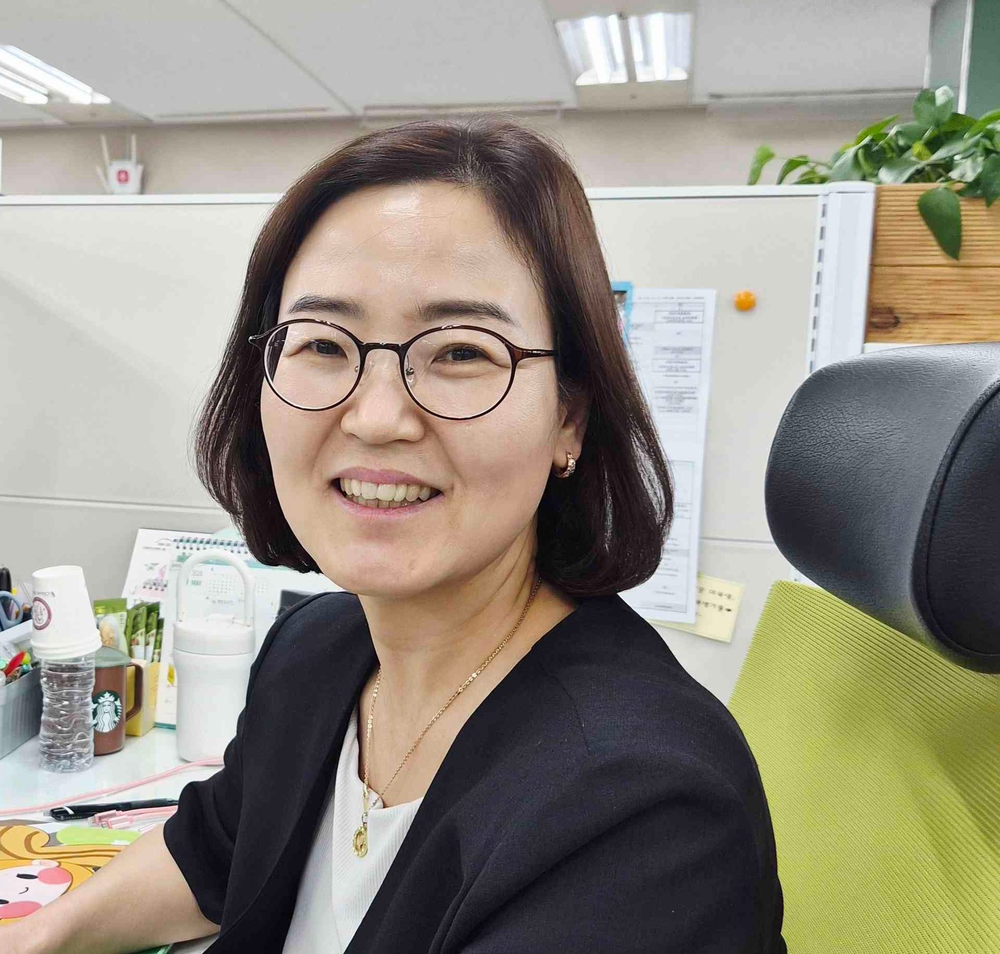
서울고용센터 취업지원총괄과
네, 통계 용어로는 ‘쉬었음 청년’이라고 부르지만, 사실은 잠시 멈춰 서서 내일을 고민하는 청년들을 말해요. 청년들이 단순히 의지가 없는 게 아니라, 번아웃으로 지쳐 있거나 나에게 맞는 길이 무엇인지 찾기 위해 잠시 쉼표를 찍고 있는 것이거든요.
어디서부터 시작해야 할지 모르거나, 번아웃으로 지쳐있거나, 어떤 일에 나에게 맞는지 모르는 경우가 많아요. 서울고용센터는 바로 이 지점에 주목해서, 1934프로젝트를 시작했습니다.
눈치채신 분들도 있겠지만, 이름에는 두 가지 의미가 담겨 있어요. 19세부터 34세까지, 취업을 준비하는 모든 청년을 대상으로 한다는 뜻이기도 하고, 숫자 하나하나에도 메시지를 담았어요. 1은 '일', 9는 '구하다(求)', 3은 '삶', 4는 '사랑' — 즉, "일을 구하고 삶을 사랑하자"는 메시지예요. 단순히 스펙을 쌓거나 생계를 위한 취업이 아니라, 나만의 속도로 걷고 있는 모든 청년을 응원하는 뜻도 함께 담겨 있답니다.
고드래곤
"이름부터 심상치 않은데요! 그럼 실제로 어떤 프로그램들이 운영되나요?"
서울고용센터 취업지원총괄과
청년의 취업준비 상황에 따라 세 가지 유형에 참여가 다 가능해요.
첫 번째는 '일구(19)스캐너' — "어떤 일이 나한테 잘 맞을까?" 라는 질문에서 출발해요. 자기 이해와 직무 이해를 바탕으로 한 취업컨설팅으로, 내게 딱 맞는 일을 찾아가는 과정이에요.
두 번째는 '일과 삶(3) 커넥터' — "이 일을 계속 할까? 바꿀까?" 고민하는 청년들을 위한 프로그램이에요. 경력진단과 재설계를 통해 새로운 방향을 탐색할 수 있도록 돕죠.
세 번째는 '마음 사(4)이다' — "나만 이렇게 힘든가?" 라고 느끼는 청년들을 위한 정서 지원 프로그램이에요. 지친 마음을 토닥이고, 번아웃을 극복할 수 있도록 함께해요.
세 가지 유형 모두 서울고용센터 청년ON라운지에서 유기적으로 연결되어 운영돼요. 진로·정서 상담부터 진로설계 프로그램 커리어 스타트업, 1:1 취업컨설팅, 실전형 면접연습 프로그램 모의면접 DAY, 기업의 현직자와 만날 수 있는 취업준비콘서트까지 — 혼자가 아닌 '함께', 단계별로 지원받을 수 있어요.
고드래곤
"마지막으로 청년들에게 한 마디 해주신다면요?"
서울고용센터 취업지원총괄과
청년의 마음을 어루만지다
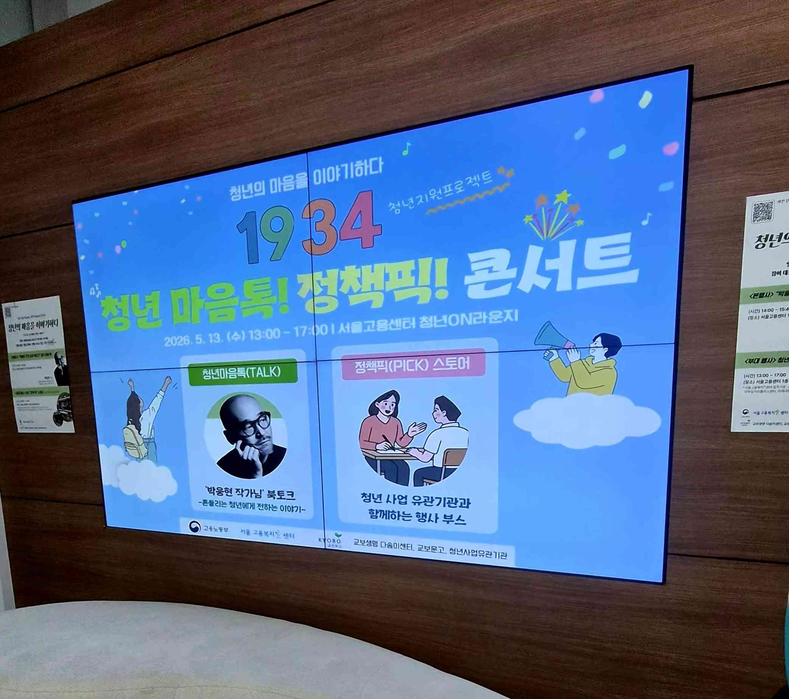
5월 13일 오후 1시, 청년ON라운지에 수많은 청년들의 발걸음이 이어졌습니다. 서울고용센터에서 ‘1934 청년 지원 프로젝트’의 시작을 알리며 준비한 「청년 마음톡(talk), 정책픽(pick) 콘서트」에는 100여 명의 청년이 모였는데요. 단순한 취업 행사가 아닌, 청년들에게 정서적 지지와 정책적 지원을 함께 제공하며, 각자의 삶과 마음을 함께 돌아보는 특별한 자리였습니다. 이날 행사장 곳곳에는 진로부터 삶 전반에 대한 고민과 다양한 이야기가 자연스레 흘러들었답니다.
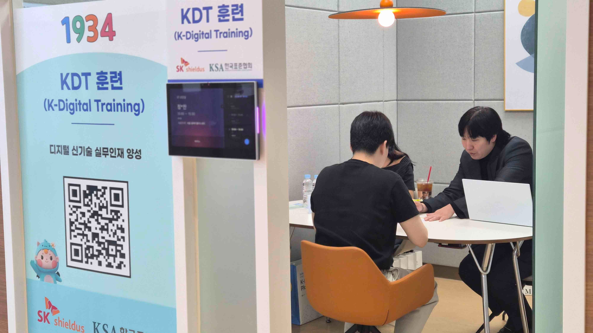
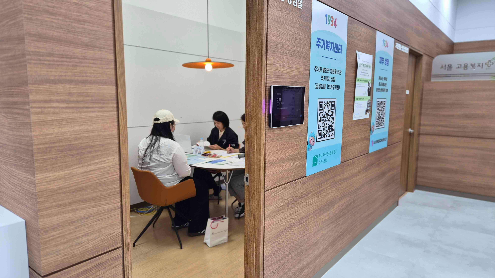
이날 행사장에는 다양한 청년 정책을 추진하는 서울지역 취업지원 유관기관들이 총출동했습니다. 관내 4개대학 (상명대·서울시립대·성균관대·한국외대) 대학일자리플러스센터는 진로 상담, 종로여성인력개발센터와 (주)아르케는 청년 일경험 상담을 진행했고, 직업훈련 상담은 한국표준협회와 인포섹 아카데미(SK쉴더스), 해외취업 상담은 한국산업인력공단이 함께했습니다. 그리고 종로주거안심센터의 주거 상담, (사)미래경제교육네트워크의 금융 상담, (주)제니엘, (주)지에스씨넷의 공백 연계 일자리 상담까지 — 청년들이 진로·취업 문제뿐 아니라 일상에서 마주하는 거의 모든 고민을 해결할 수 있도록 마련되었습니다. 총 70여명의 청년들이 상담 부스를 찾아왔는데요, 이들의 무거운 고민이 조금은 가벼워졌기를 바랍니다.
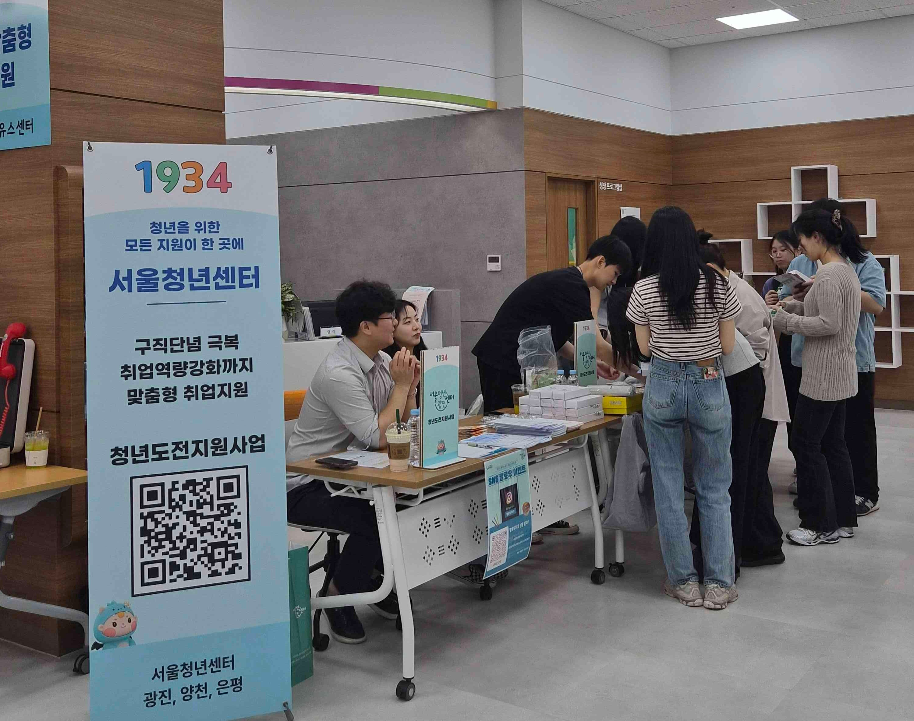
그리고, 상담을 받고 나오거나 일찍 도착한 청년들은 행사장 옆에 마련된 광진·은평·양천 청년센터의 정책 홍보 부스에서 본인에게 지금 당장 필요한 청년정책이나 제도가 무엇인지 알 수 있는 시간도 가졌습니다. 몰라서 못 받았던 다양한 혜택들이, 이날만큼은 손 닿는 곳에 있었습니다.
진지한 상담이 이어지는 한편, 행사주제와 관련된 퀴즈를 맞춘 청년들을 위한 룰렛 이벤트와 인생네컷 사진기 앞은 환호성과 웃음소리로 활기가 넘쳤습니다.
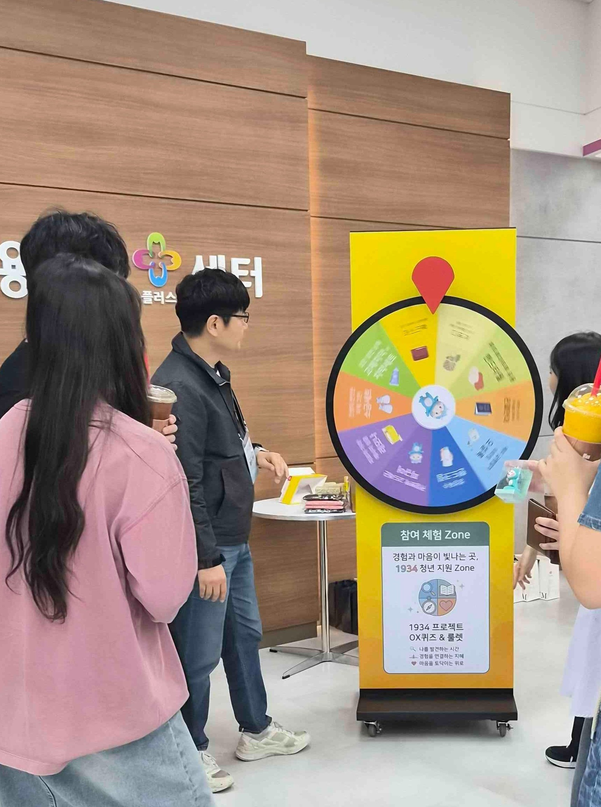
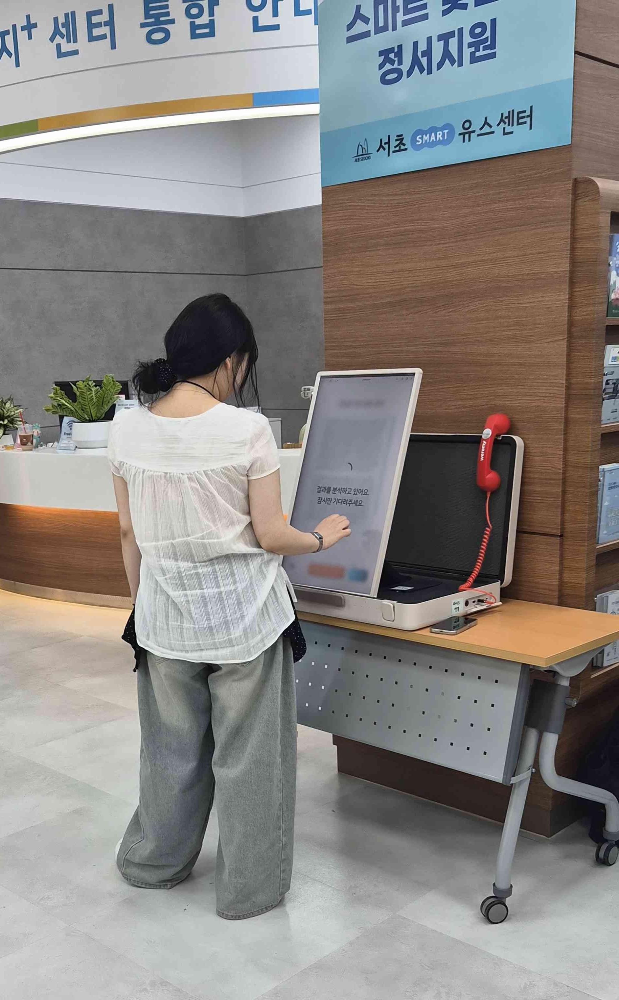
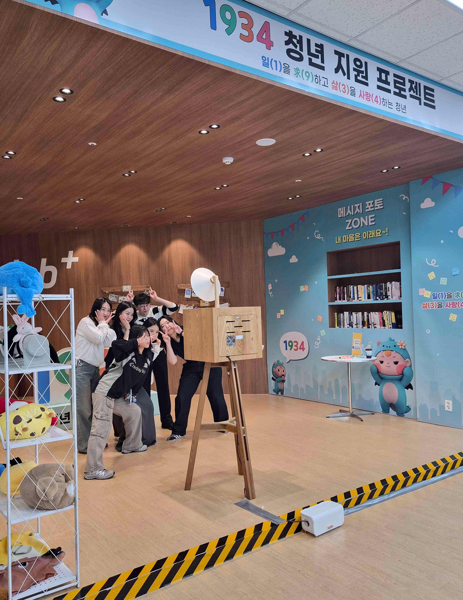
그리고 그 옆에 눈길을 끈 특별한 기기가 있었는데요. 행사장 한켠에 마련된 ‘AI 마음 나, 너’ 마음상담 키오스크 기기였습니다. 취업 준비를 하면서 좀처럼 꺼내기 어려웠던 속마음을 기기 앞에서 털어놓으면, AI가 답변을 건네주는 방식이었습니다. 신기하다는 표정으로 화면을 들여다보다가, 어느새 진지하게 고민을 이야기해나가는 청년들의 모습이 눈길을 끌었습니다. 사람에게는 선뜻 꺼내지 못했던 이야기를, 이날만큼은 조심스럽게 꺼내볼 수 있었습니다. 이런 작지만 따뜻한 순간들이 오늘을 더욱 특별하게 만들어 주었습니다.
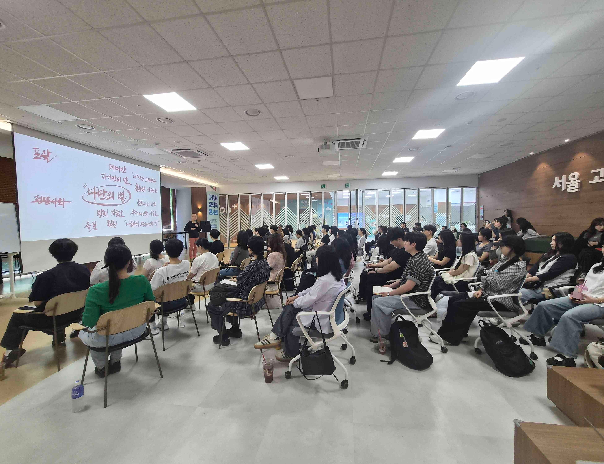
행사의 하이라이트는 교보문고와 함께 개최한 북토크였습니다. 단상에 선 사람은 박웅현 작가. "나이는 숫자에 불과하다", "사람을 향합니다" — 누구나 한 번쯤 들어봤을 카피들을 만들었고, 현재 TBWA KOREA 조직문화연구소장이자, ‘여덟 단어’·’책은 도끼다’의 저자로 익숙한 그가 청년들을 향해 ‘나만의 별 찾기’라는 주제로 이야기를 시작했습니다.
이날 북토크 현장과 진로상담까지 직접 체험한 청년ON기자단 박수민 기자의 후기를 다음 페이지에서 자세히 전해드립니다!
청년ON기자단 체험기
취재 및 작성 | 청년ON기자단
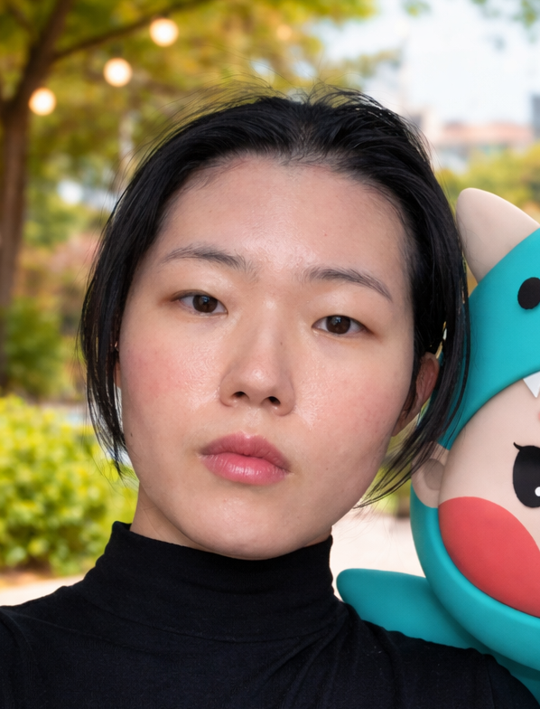
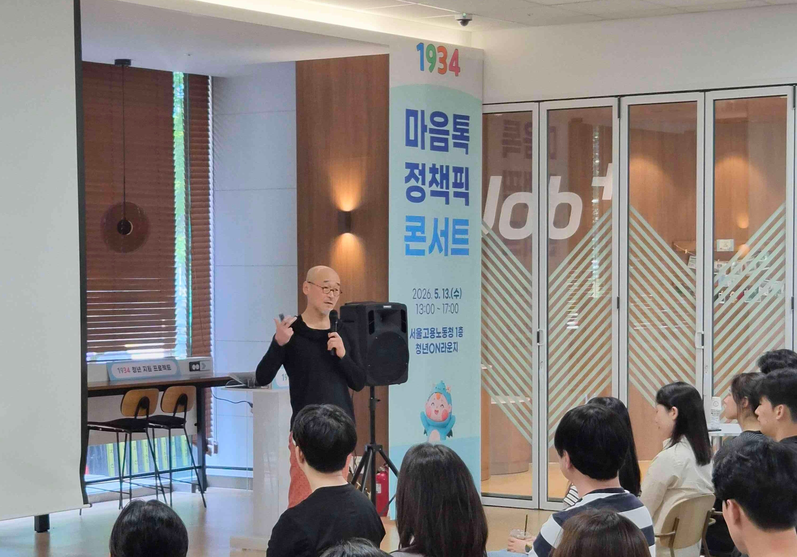
“박웅현” 작가님의 이야기는 스펙쌓기나 자기계발 이야기가 아닌 ‘내 길’을 찾아나가는 과정과 불안한 순간들을 다스리는 법 그리고 남들이 만들어놓은 길을 따라가는 것보다 나만의 속도로 나만의 방향을 찾아가는 것이 왜 결국 더 단단한 길이 되는지에 대한 이야기였습니다. 정답을 주는 강연이 아니라 스스로 질문을 던지게 만드는 시간이었습니다.
특히, 취업준비생들이 남들과 비교하는 일이 잦고 다양한 잣대로 평가당하는 것이 일상이다 보니 박웅현 작가님이 들려주는 인생에 대한 이야기와 힘든 시기의 청년이 가져야 할 마음가짐이 잘 와닿았습니다.
사회와 다른 사람의 평가로 정해진 정답에 맞추기보다는 자기 자신에게서 우러나오는 것을 쫓아야 한다는 말은 취업준비를 하는 청년에게 가장 필요하지만, 또 가장 실천하기 어려운 것이기도 하죠.
왜냐하면 당장 빠르게 취업해야 할 것 같은 조급함이 들고, 빠르게 취업하기 위해 타인과 다른 특별한 스펙과 경험의 기회를 갖기위해 노력하다 보면, 취업 준비생들은 한없이 기준이 높은 남들의 합격자소서와 합격스펙을 보며 자신의 기준을 잃기 쉽습니다. 자기가 하고싶다고 생각했던 분야도 계속 탈락의 고배를 마실 때는 자신에게 어울리는 길이 아닌지, 다른 길을 선택해야 하는지 끝없이 고민하곤 합니다.
이런 청년들에게 작가님은 다양한 소설 작품 속 인물의 이야기들을 인용하면서 남들보다 조금 늦거나 다른 길을 가더라도, 자기 중심을 갖고 묵묵히 걸어갈 수 있는 법을 알려주셨습니다. 앞으로 나아가지 못하고 흔들리는 스스로의 모습에 죄책감과 불안함을 느끼는 저와 같은 많은 청년들이 아마 깊은 위로를 얻었을 거라고 생각합니다. 저 역시도, 이번 강연을 통해 하루하루 충실히 살아갈 수 있는 마음의 힘을 풀충전할 수 있었습니다.
흔들리고 있는 수많은 청년들이 적어도 이날 만큼은 단단한 마음과 가벼운 발걸음으로 행사장을 나섰길 바랍니다.
박웅현 작가 소개
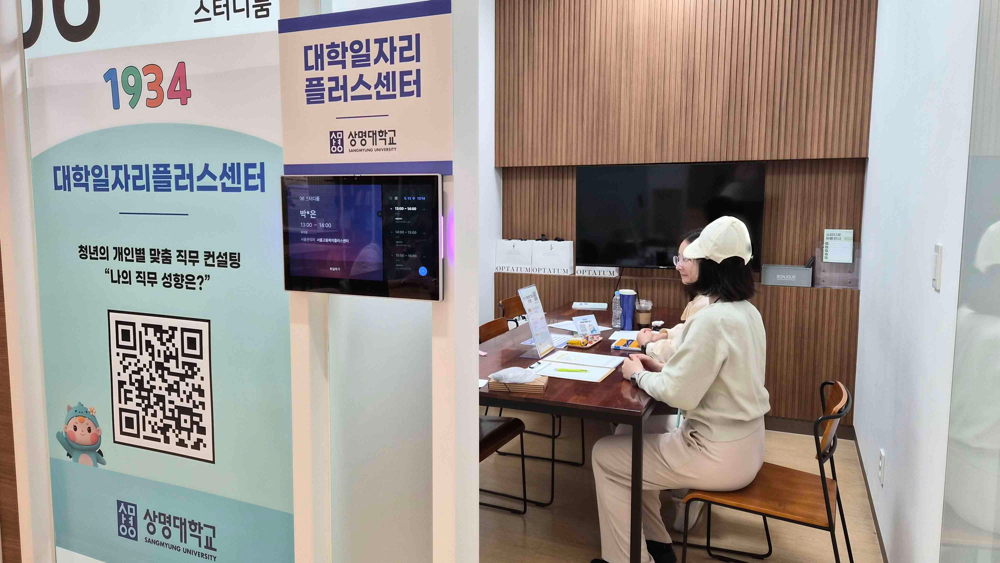
사실 북토크 전, 대학일자리플러스센터 부스에도 들러, 진로 상담을 받았었는데요 eDISC 검사를 활용한 1:1 컨설팅으로, 내 성향을 파악하고 그에 맞는 직장과 직무를 함께 짚어보는 시간을 가졌습니다. 이전 모의면접에서 "스스로에 대해 더 잘 알아야 한다"는 피드백을 받았던 터라, 망설임 없이 자리에 앉았습니다. 그 빈자리를 채워줄 것 같은 예감이 들었거든요.
자기소개할 때 장단점을 어떻게 말해야 할지 막막했다면, eDISC 결과를 활용하는 것도 좋은 방법이라는 걸 알았습니다. 30분 상담 동안 결과 해설은 물론, 자기소개서 활용법과 서류 전형에 관한 질문까지 받아주셨습니다. 상담을 마치고 나오면서 디퓨저 선물까지 받았으니, 상담도 받고 선물도 받는 일타이피 시간이었습니다.
"모든 청년이 자신만의 길을 찾는 그 날까지, 서울고용센터가 함께하겠습니다."
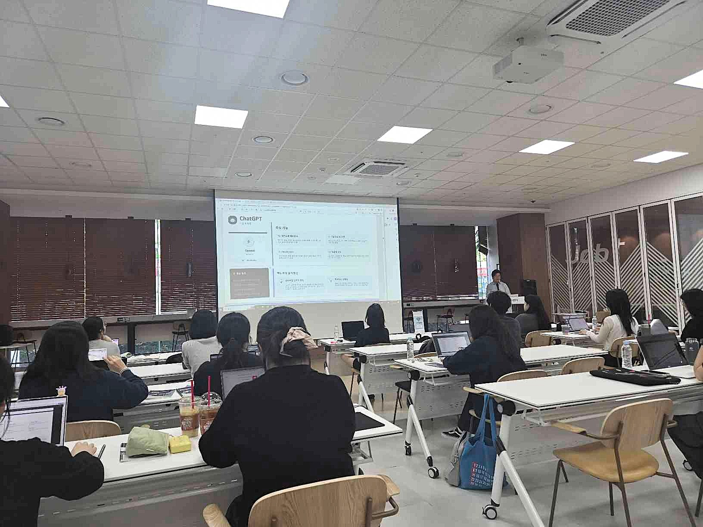
그동안 챗GPT나 제미나이를 단순히 궁금한 것을 묻거나 짧은 글을 다듬는 용도로만 사용해오셨나요? 이번 특강은 그런 '기초적 활용'의 틀을 깨고, 현업에서 즉시 통하는 AI활용 능력을 기르는 시간이었습니다. 단순한 텍스트 생성을 넘어, 방대한 데이터를 체계적으로 분석하고 이를 한눈에 들어오는 표와 그래프로 시각화하는 구체적인 테크닉을 다루었습니다. 특강 참가 청년들은 정보의 성격에 따라 어떤 AI 모델을 선택해야 최상의 결과물을 얻을 수 있는지 배우며 AI 활용의 깊이를 더했습니다. 거창한 기술이 아니라, 우리가 이미 알고 있는 도구를 가장 똑똑하게 부리는 법을 배우며 실질적인 직무 경쟁력을 키워준 밀도 높은 커리큘럼이었습니다.
"AI가 사람을 대체한다는 뉴스를 접하면서 '나도 제대로 배워야겠다'는 생각이 들었어요. 막연한 불안감으로 신청했는데, 오히려 AI를 내 편으로 만드는 법을 배우고 나니 자신감이 생겼습니다. — 청년ON기자단 정수연 기자"
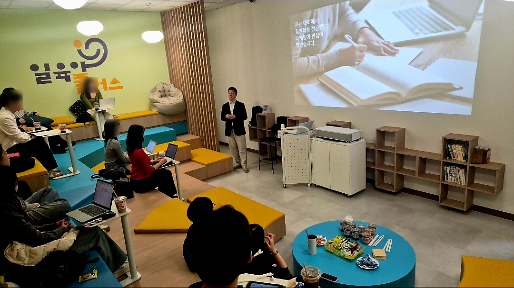
취업 준비하면서 가장 듣고 싶은 말이 무엇인가요? 아마 "지금 회사에서 진짜 원하는 게 뭔지"일 거예요. 커피챗 프로그램은 바로 그 궁금증에 대한 답을 얻을 수 있는 자리였습니다. 현직자 멘토와 함께, 최근 채용 시장의 현실과 기업이 진짜로 원하는 역량이 무엇인지 생생하게 들었습니다. "스펙보다 자기객관화", "공부머리와 일머리는 다르다", "신입의 진짜 정의"까지 — 취업 준비하면서 한 번쯤 흔들렸던 그 질문들에 현직자가 직접 답해줬습니다.
딱딱한 강의가 아니라 마음의 긴장을 녹여주는 커피 한 잔을 곁들인 소그룹 단위의 편안한 분위기 속에서 취준생 청년들은 여느 취업 컨설팅 프로그램에서도 알 수 없는 “진짜” 정보를 얻을 수 있었습니다.
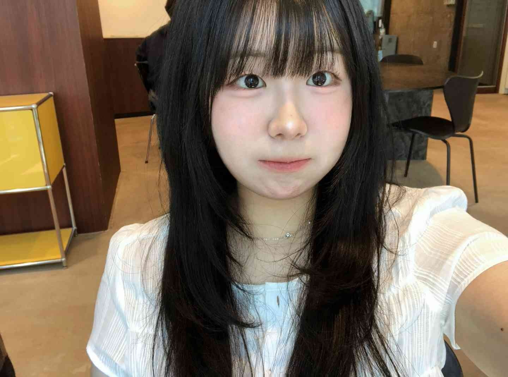
“실제 기업의 사례들을 들어 설명해주셔서 훨씬 와닿았어요. AI 활용법 같은 요즘 채용 트렌드도 짚어주셨고, 무엇보다 너무 재밌게 진행해주셔서 지루할 틈이 없었습니다! “ — 청년인턴 서희선
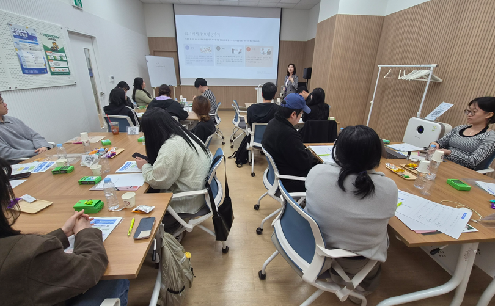
내가 쌓아온 경험들, 과연 '경력'이 될 수 있을까요? 이 프로그램은 그 질문에서 출발합니다. 지금 내가 속한 업계와 직무가 나와 맞는지를 진단하는 '블랙박스 프로그램', 내가 일과 직무를 선택할 때 무엇을 가장 중요하게 생각하는지 찾아보는 '프레디저 경력진단', 그리고 중장기적인 커리어 목표를 직접 설계해보는 ‘커리어 매트릭스'까지 — 단순한 취업 스펙 점검을 넘어, 나답게 커리어를 설계하는 방법을 배울 수 있는 시간이었습니다.
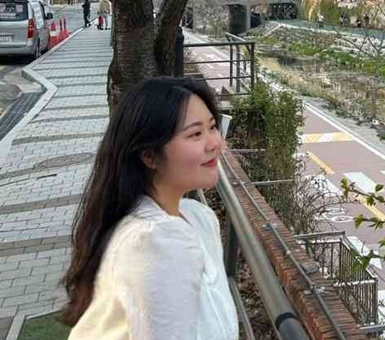
"성취감, 소속감, 인적 네트워크 등 다양한 기준으로 경력을 진단한다는 점이 인상적이었어요. 제가 커리어에서 가장 중요하게 생각하는 가치가 무엇인지 명확히 정리하는 순간이었고, 앞으로 나아갈 방향에 대한 동기부여도 됐습니다. — 청년인턴 이현진"
1934 청년 특화 프로그램은 앞으로도 계속됩니다! 다음 프로그램 놓치지 않으려면? 서울고용센터의 오픈카톡방과 인스타그램을 주시하세요! 😉
관심 있는 기업의 현직자를 직접 만나 채용 트렌드와 직무 이야기를 듣는 시간! 4월 3일에는 일하는 근로자들의 행복큐브인 근로복지공단, 17일에는 제약·바이오 선두기업 한미그룹, 15일과 22일에는 각각 대한민국 게임 산업의 선두를 이끄는 넷마블과 펄어비스가 이곳을 찾았습니다. 이어서 5월 6일에는 마케팅 직무를 희망하는 취준생들을 위해 준비한 이마트_신세계그룹, 공기업 취준생들의 꿈의 직장인 인천국제공항공사(5/8)까지 — 쉴 틈 없이 이어진 행사들 중에서도 청년들의 열기가 남달랐던 세 현장 — 한미그룹, 넷마블, 인천국제공항공사를 집중 조명합니다.
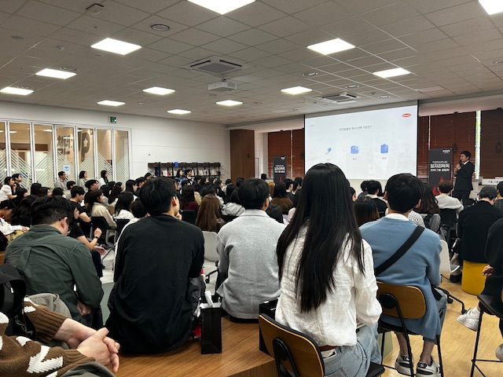
이날만큼은 청년ON라운지가 좁게 느껴졌습니다. 한미그룹의 공채 기간과 맞물려 실제 지원자들이 대거 몰리면서 무려 162명이 자리를 채웠습니다. 올해 취업준비콘서트 중 가장 많은 인원이 참여한 날이었습니다.
현장의 열기는 참여자 수치만으로는 다 설명되지 않습니다. 한미그룹 인사 담당자는 쏟아지는 질문 하나하나를 끝까지 세세하게 답해줬고, 질문하는 청년들의 열의는 행사가 끝날 시간이 한참 지나도록 수그러들지 않았습니다. 결국 올해 취업준비콘서트 중 가장 길게 이어진 자리로 기록됐습니다. 현직자에게서 직접 듣는 생생한 정보의 가치가 고스란히 느껴지는 시간이었습니다.
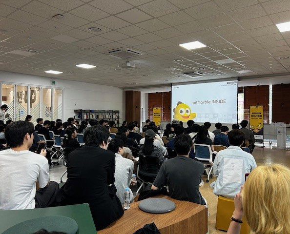
게임 산업에 관심 있는 취준생이라면 귀가 번쩍 뜨일 만한 자리였죠. 넷마블 취콘에도 무려 100명의 청년들이 찾아왔습니다. 넷마블 현직자는 게임 산업 전반 소개부터 시작해 사업PM, 마케팅, 퍼블리싱 개발, 인턴십 프로세스까지 직무별로 촘촘하게 이야기를 풀어냈습니다.
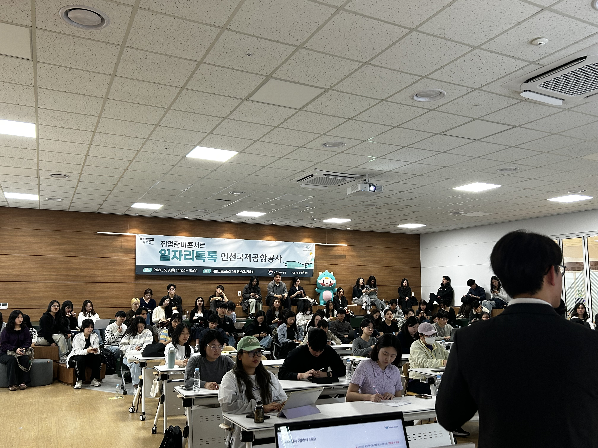
공기업 취업을 준비 중인 청년들(83명)의 발걸음이 이어졌습니다. 공기업만의 채용 프로세스와 면접 준비 노하우는 물론, 다양한 직무 설명들까지! — 참여한 청년들은 메모하느라 손이 바빴을 시간이었습니다. 이날 현장을 직접 취재한 청년ON기자단 정수연 기자의 현직자 심층 인터뷰가 다음 페이지에서 이어집니다.
"떨어도 괜찮아요. 단, 준비한 말은 다 하고 나오세요"
인천국제공항공사 인사팀 | 2017년 입사, 현재 10년 차
Q. 신입을 볼 때 가장 중요하게 생각하는 역량은 무엇인가요?
"책임감, 소통 능력, 도전 정신입니다. 사실 이 세 가지를 한마디로 요약하면 결국 저희 회사가 추구하는 인재상과 맞닿아 있어요. 단순히 스펙이 좋다고 되는 게 아니라, 이 역량들이 실제 경험 속에서 어떻게 발현됐는지를 봅니다."
Q. 직접 취업을 준비하셨을 때 어떻게 하셨나요?
"약 1년을 준비했는데요, 처음 3~4개월은 어학 성적과 한국사능력검정시험 같은 가점 요소들을 채우는 데 집중했어요. 서류 스펙이 어느 정도 갖췄졌다 싶을 때 필기와 면접 준비를 시작했는데, 솔직히 돌아보면 면접 준비가 충분하지 못했던 것 같습니다. 지금 준비하시는 분들은 정량적인 스펙을 최대한 빨리 채운 뒤, 필기와 면접도 동시에 꾸준히 준비하시길 추천드립니다."
Q. 면접을 잘 볼 수 있는 팁을 주신다면요?
"면접볼 때, 면접장에서 긴장하는 건 너무나 당연합니다. 면접관들도 그 점은 충분히 감안하고 있어요. 중요한 건 '떨면서 말하는 것'과 '긴장해서 준비한 말을 못 하고 나오는 것' 사이의 차이입니다. 이 둘은 완전히 다른 이야기예요. 면접 현장에서는 딱 하나만 마음에 새기세요. "준비한 말은 다 하고 나오겠다." 그 마음가짐 하나가 결과를 바꿀 수 있습니다."
Q. 취업준비콘서트, 취준생들에게 추천하시나요?
"진로가 확고한 분이라면 관심 분야 특강을 들으면서 실질적인 인사이트를 얻을 수 있고, 아직 방향을 찾고 있는 분이라면 다양한 특강을 들으며 나침반을 만들어가는 과정 자체가 큰 도움이 됩니다. 인터넷으로 얻는 정보와는 질이 다릅니다. 현장 질의응답에서 얻을 수 있는 정보만으로도 시간을 내서 참석할 가치가 충분합니다."
Q. 마지막으로 취업 준비 중인 청년들에게 한마디 해주신다면요?
"포기하지 않는 것, 그게 전부입니다. 저도 첫 번째 필기 과목을 망쳤다고 생각해서 중도 퇴실까지 고려했었어요. 그런데 포기하지 않고 끝까지 치르고 나왔더니 합격할 수 있었습니다. 취업 준비는 결국 마지막까지 자리를 지키는 사람이 이기는 싸움입니다. 끈기 있게 임하다 보면, 반드시 좋은 결과가 따라옵니다."
취재 및 인터뷰 I 정수연 기자 (청년ON기자단)
현직자 면접관과 함께한 면접 연습으로
실전 경험 UP!
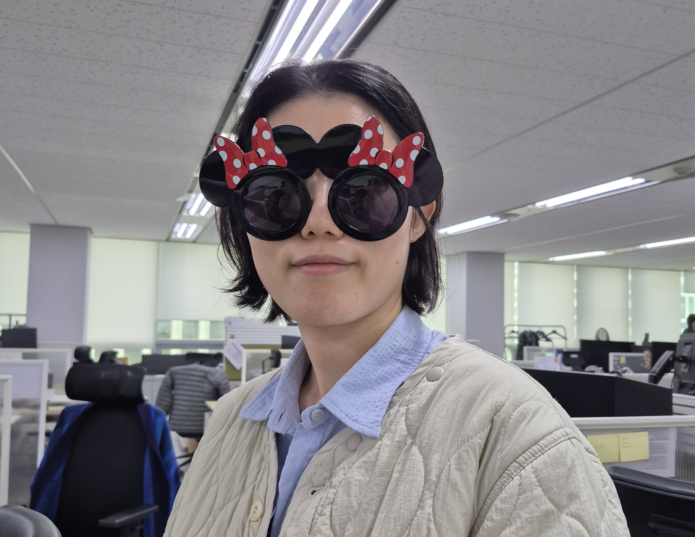
취업 준비 1년 차, 웬만한 모의면접은 다 겪어봤다고 자부하는 청년ON기자단의 박수민 기자가 3.24. 서울고용센터의 대기업 인성면접 대비 모의면접에 당당히 등판했는데, 여기..다른 곳과는 차별화되는 특별한 무엇인가가 있었습니다.
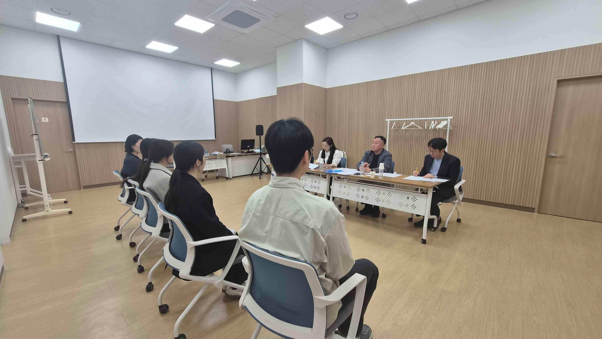
학교에서 진행했던 모의면접 프로그램은 평소 익숙한 환경이었던지라, ‘모의’라는 생각이 강하게 들어 특별히 긴장이 되지는 않았습니다. 하지만 서울고용센터의 모의면접은 별도 분리된 지원자 대기실의 무거운 공기부터, 현직자 면접관의 존재, 실제 면접 프로세스를 그대로 재현하여 지원자가 “진짜”면접이라고 느낄 수 있는 환경을 만들어줘서, 확 긴장이 되었습니다.
모의면접 후 진행된 피드백 타임에서는 면접관 입장에서 실제로 지원자의 답변이 어떻게 들리는지, 어떤 지원자를 원하는지, 회사 입장에서 불쾌하게 느껴질 수 있는 발언이 무엇인지 가감없이 지적해주셨는데, 지금까지 참여해본 모의면접 중에서 가장 솔직한 평가였습니다.
특히 기억에 남았던 부분은 현직자 면접관님의 '졸업유예'에 대한 지적이었습니다. 학교 프로그램 참여를 위해 유예했다는 솔직한 답변에 "이득을 취하려 유예했다는 인상을 줄 수 있어 좋지 않다"는 피드백을 해주셨는데요, 졸업유예 기간이 면접관 눈에는 공백기처럼 비칠 수 있다는 점, 이를 커버할 수 있는 답변을 미리 준비해두는 것이 중요하다는 것을 알게됐습니다.
그리고, 면접이 끝난 후, 일주일 내로 [평가기록지]를 보내주시는데, 제가 부족했던 부분을 기록지로 디테일하게 확인할 수 있어 큰 도움이 됐습니다.
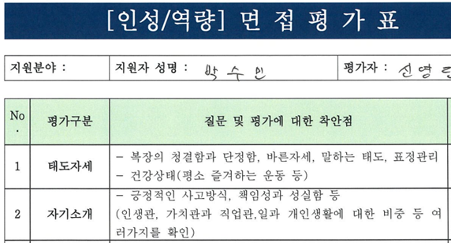
다양한 경력과 배경을 가진 분들이 모여, 같은 질문에 저마다 다른 방식으로 답하는 모습을 옆에서 직접 들을 수 있었던 시간도 큰 자산이 되었습니다. 다른 지원자분들이 받는 피드백을 함께 들으며, 그분들의 장점을 저도 습득해야겠다는 동기부여도 자연스럽게 이뤄졌습니다.
[Interview & Closing]
함께한 지원자의 한마디: 피드백이 너무 솔직하고 심도 깊어서 큰 도움이 됐습니다.
기자단 한마디: 현재 취준이 막막하다면? 내 면접 실력의 진짜 민낯을 마주할 수 있는 서울고용센터의 모의면접데이, 꼭 한 번 참여해 보세요!
취재 및 촬영: 청년ON기자단
박수민, 이주원 기자
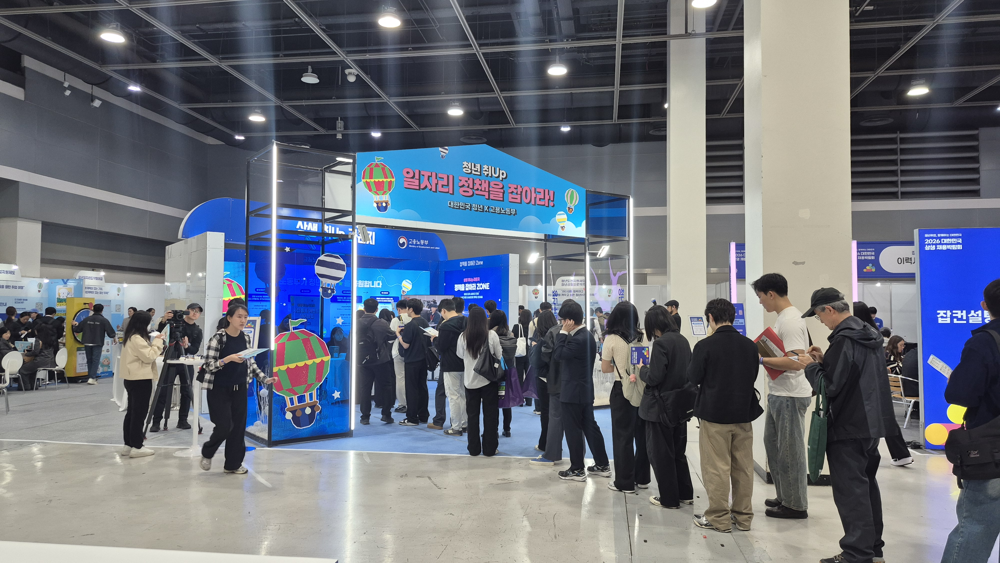
4월 28일과 29일, 청년ON기자단이 서울 서초구 aT센터로 출동했습니다. 이번 취재지는 바로 '2026 대한민국 상생 채용박람회'. 고용노동부·산업통상자원부·중소벤처기업부 등 관계부처와 한국경제인협회 등 경제단체가 공동으로 주최한 이번 박람회에는 온라인 포함 약 700개사가 참여하여 역대 최대 규모로 펼쳐졌습니다. 한 손엔 이력서, 한 손엔 부스 안내도를 들고 분주히 움직이는 청년들로 행사장은 개장 직후부터 열기로 가득했습니다.
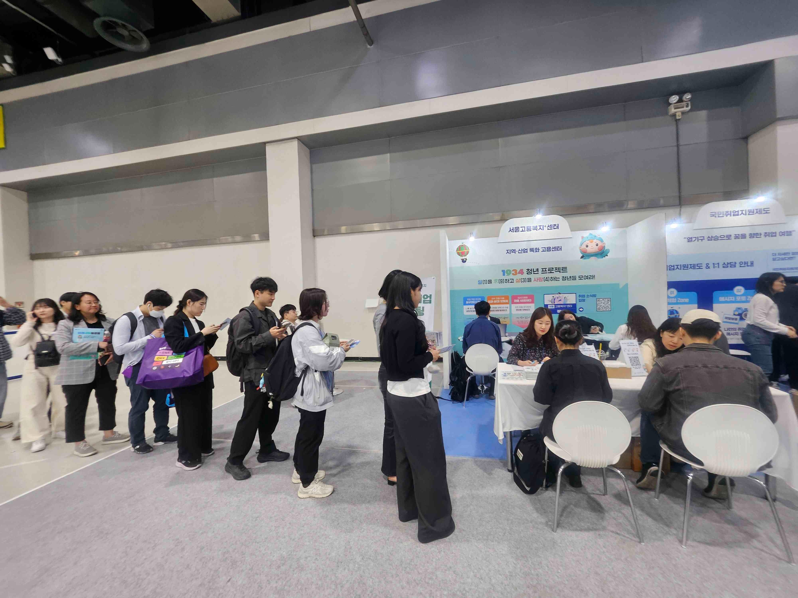
서울고용센터도 현장에 자리를 잡았습니다. 부스에서는 취업 컨설팅도 함께 진행했는데요. 이력서·자기소개서 컨설팅이 쉴 새 없이 이어져 양일간 총 78명이 현장에서 바로 컨설팅을 받았습니다. 주거, 해외취업, 구직자도약보장패키지, 일경험 등 다양한 취업 지원 서비스도 함께 안내되며 부스 앞은 내내 발길이 끊이지 않았습니다.
현장을 누비던 기자단이 올해로 두 번째 박람회를 찾았다는 02년생 취업준비생을 붙잡았습니다. 작년에 이어 올해도 발걸음했다는 이 청년에게 오늘 박람회에서 가장 인상 깊었던 점을 묻자 눈을 반짝이며 답했습니다.
"면접관 입장에서 면접 질문의 의도를 직접 들을 수 있었어요. 채용공고만 보다가 기업 담당자에게 직무 설명을 직접 들으니 시야가 확 넓어진 느낌이었어요. 사람인 사이트에 로그인해두면 5월 27일까지 AI 면접도 따로 볼 수 있다고 해서 꼭 활용해볼 생각이에요."
한편, 취업 준비 중 가장 어려운 점을 묻는 질문에는 잠시 표정이 무거워졌습니다. "경력자를 선호하다 보니 신입은 경험 쌓기도 어렵고, 그러다 보니 취업은 더 안 되는 악순환이 생기는 것 같아요." 짧은 한마디였지만, 현장의 무거운 현실이 그대로 담겨 있었습니다.
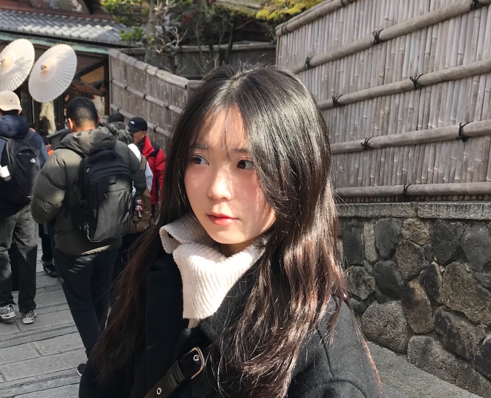
"700여 개 기업이 한자리에 모인다는 게 말처럼 쉬운 일이 아닌데, 이런 자리가 매년 열린다는 사실 자체가 취준생에게는 정말 소중한 기회라고 느꼈습니다."
"서울고용센터 부스에서 1934 프로젝트를 소개받은 청년들의 반응이 뜨거웠어요. '이런 프로그램이 있는 줄 몰랐다'는 말을 여러 번 들었는데, 더 많은 청년들에게 알려졌으면 좋겠다는 생각이 들었습니다."
취업 성공을 위한 든든한 조력자가 되어줄 알찬 프로그램들이 계속해서 기다리고 있습니다.
내용: 현직자에게 직접 듣는 생생한 직무 토크
• 5/27 KAI(한국항공우주산업)
• 6/17 하나은행
• 6/24 LG CNS
경험에서 진가(진단-가치) 찾기
내용: 나만의 ‘경험’을 진짜 ‘경력’으로 바꿔주는 경력진단 프로그램
모의면접DAY
내용: 현직자 면접관과 함께하는 실전 면접 연습
자세한 내용은 서울고용센터 인스타그램(@moel_seoulew)에서 확인해 주세요!
5월호 웹진, 열심히 읽으셨죠? 그렇다면 이 퀴즈, 어렵지 않을 거예요.
Q. 다음 힌트를 읽고 빈칸을 채워주세요.
"일을 구하고 삶을 사랑하자는 마음으로 태어난 이 프로젝트. 번아웃으로 지친 청년도, 방향을 잃은 청년도, 다시 시작하고 싶은 청년도! 누구든 환영합니다. 역량강화부터 현직자와의 만남, 마음을 어루만져주는 특강까지. 혼자가 아닌 함께, 모든 경험이 경력이 될 수 있도록. 서울고용센터 「 OOOO 」 청년 지원 프로젝트!"
[참여 방법]
서울고용센터 인스타그램(@moel_seoulew)을 팔로우하고, 이벤트 게시물에 정답을 댓글로 남겨주세요. 추첨을 통해 커피 쿠폰을 보내드립니다.
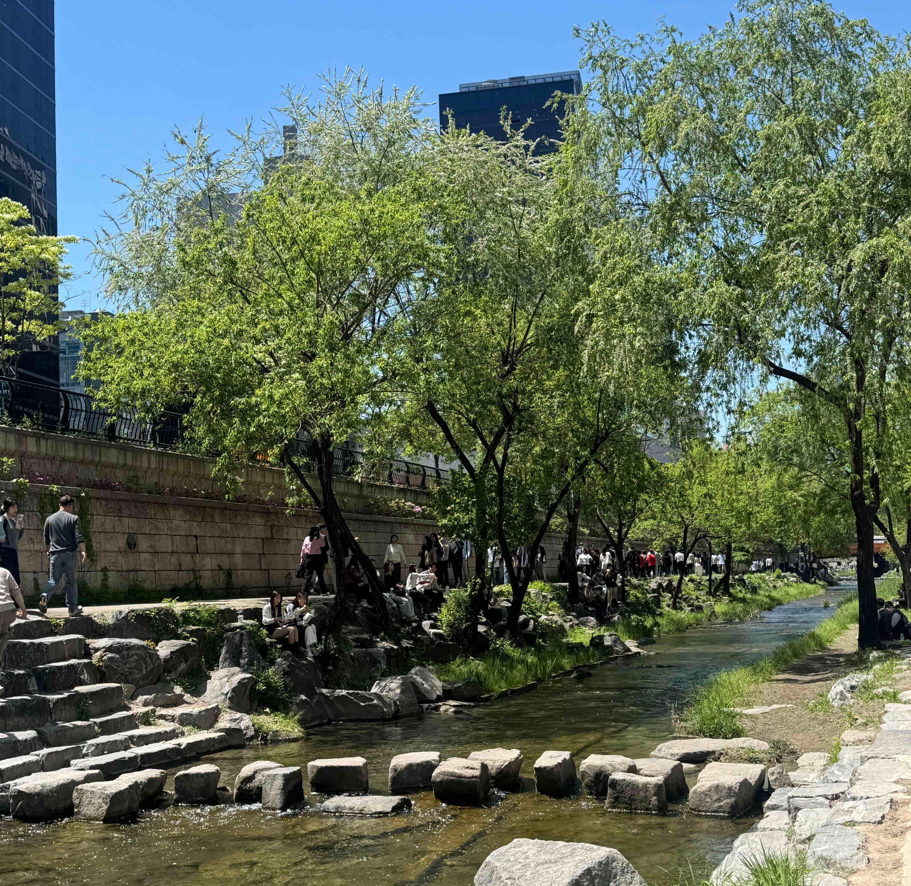
"5월의 청계천은 초록이 한창입니다."
저마다의 속도로 자라난 나무들이 모여 이 울창한 풍경을 만들어냈듯,
지금 이 순간 각자의 자리에서 고민하고 버티는 당신도 그렇게 조금씩, 그러나 분명하게 자라고 있습니다.
조급하지 않아도 됩니다.
돌아온 것 같은 길도, 멈춰선 것 같은 시간도 모두 당신만의 특별한 이야기가 되어 돌아올 테니까요.
그 길 위에서, 청년ON라운지가 늘 한함께하겠습니다.